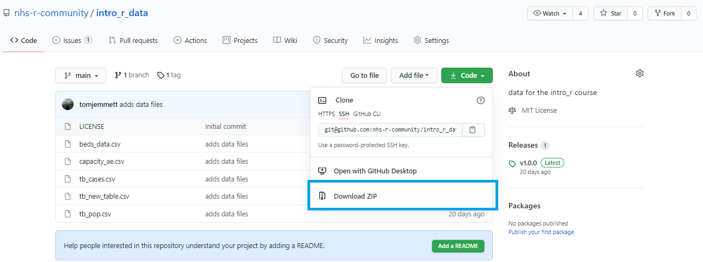
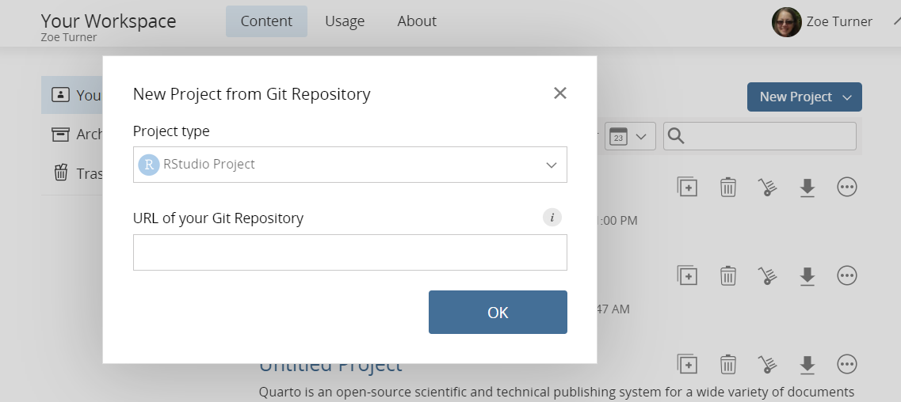

install.packages('tidyverse')Training
We host some regular training courses that are very popular. These are:
- Introduction to R and RStudio
- Intermediate R
- Introduction to Git and GitHub using R
- Shiny for Beginners
- Introduction to Quarto
All course materials are freely available through our GitHub. Use the links above to skip to the relevant ‘guide for attendees’ section.
Where to do the course?
With these courses, you need to have the relevant software and a place to store the files. Institutional rules and firewalls may, in some cases, prevent you from doing this on your work computer. For that reason, we often provide training using Posit Cloud - an online space you can log into that already has most of the relevant tools. You are also welcome to complete the course on your work computer if you can, or on a personal computer. To help you explain to your work’s IT department about what tools you need on your machine and why, see our Statement on Tools book for guidance.
If you are using Posit Cloud
Warning
As Posit Cloud is hosted in the US this is used only for training where data is publicly available and the recommendation is to never use the Cloud for analysis of any sensitive data.
Posit Cloud terminology
The workspace is the overall work area that is managed by a person for a training session or workshop. The projects are set up within the workspace and are set to duplicate for individuals to also join the workspace.
Actively used workspaces [Archived For Information]
Projects in active workspaces, like the Introduction to R and R Studio workshop, will be archived after 3 months which means the project isn’t counted in the Cloud usage but is still retrievable.
One-off workspaces [Archived For Information]
Workspaces for one-off events like conferences will be archived after 3 months and deleted after 6 months.
Prework for attendees
Equipment - screens
Many of the course and workshop formats expect a “code-along” approach which is best done with 2 screens for comfort of moving between the demonstration and using RStudio on your computer.
Where users use two separate computers to enable having 2 screens, this may cause issues with sharing code in the chat functions and it will not be possible to share the coding screen for debugging support.
Set up Posit Cloud
TipWhy use the Posit Cloud? (tip)
If you haven’t got R or RStudio on your computer, older versions of these programs or very tight restrictions on work computer networks (VPNs) then you can use the Posit Cloud for the workspace.
There is still some setting up required though so follow the steps for each course and let us know if anything doesn’t work or if instructions are not clear at the core development team.
- Sign up for a free Posit Cloud account at https://posit.cloud/ before the workshop.
- Log in with either an existing Google or GitHub account, or alternatively set up an account directly with Posit Cloud.
The Cloud is restricted to a certain number of hours a month or RAM use as a free account and this should be enough for the purpose of a day workshop.
Set up your own laptop/computer
TipWhy use your own computer? (tip)
As some VPNs (Virtual Private Networks) block access to Posit Cloud, you may wish to use your own computer.
VPNs sometimes do work but block parts of the R functionality, this is particularly a problem with Shiny apps viewed through the browser on the Cloud.
If you are using your own computer please ensure you have the latest versions of R and RStudio installed. Technical guidance on which programs are required and how to get those installed can be found in the NHS-OA Community Statement on Tools book.
It is important to have the latest R installed as older versions have had issues when installing ‘{tidyverse}’ packages. Errors may come up saying that packages like {broom} or {readr} cannot be installed but even when this has been installed separately there continue to be other errors. Some of the answers in this post from Posit community may help.
Warning
If you require permission for programs to be installed on your computer by an IT department, it is worth getting agreement to also have these updated by your IT department regularly or by request as it is always good practice for fixing issues and bugs.
Downloading zip files
One way of getting files from the GitHub repositories is to download a zip file:

However, there are alternatives that are detailed in each course under the header ‘Get data’, including whether this is a good way for your own computer or Posit Cloud.
Introduction to R and RStudio course materials
Viewing published slides
Installing packages
Installing packages will be part of the course but the instructions can be followed in the pre-work from these course slide instructions:
Or using the RStudio program and the Packages tab in the bottom right panel which is explained in this short video from Andrew Jahn.
Get data - own computer
As well as the packages for the course you will also need to install the packages {usethis} and {here} installed run the following code:
# install.packages(c("usethis", "here"))
usethis::use_course("nhs-oa-community/intro_r_data", destdir = here::here()) Get data - Posit Cloud
Connect directly from GitHub repository by clicking on the blue button for New Project in the top right from the main screen. From the drop down that appears select New Project from Git Repository, then copy the following URL into the text which can be found in the particular workshop sections:
https://github.com/nhs-oa-community/intro_r_data

Downloading course slides only
NoteNot a necessary step!
All the slides are published through GitHub to a redirected URL so should be available to all organisations. However, if you would still like to get copies then follow this section.
Note that the files are html for greater accessibility and we do not provide the slides as PowerPoint or pdf.
Slides can be downloaded from a separate repository https://github.com/nhs-r-community/intro_r/tree/gh-pages using the same process as for downloading zip file.
These are just the slides and not the underlying code used to produce the slides, which can be found in the main repository https://github.com/nhs-r-community/intro-r-rstudio. We have separated the code from the published slides and the data to not overwhelm beginners to R as there a lot of files!
Intermediate R
This course expects a level of prior experience and understanding of R.
Currently this course is script based and does not come in slide form.
Installing packages
Packages used:
install.packages(c("tidyverse", "NHSRdatasets", "pacman", "janitor", "zoo",
"tm", "glue", "NHSRplotthedots"))Get data - own computer
As well as the packages for the course you will also need to install the packages {usethis} and {here} installed run the following code:
# install.packages(c("usethis", "here"))
usethis::use_course("nhs-oa-community/intermediate_R_training", destdir = here::here()) Get data - Posit Cloud
Connect directly from the GitHub repository by clicking on the blue button for New Project in the top right from the main screen. From the drop down that appears select New Project from Git Repository, then copy the following URL into the text which can be found in the particular workshop sections:
https://github.com/nhs-oa-community/intermediate_R_training
Course scripts are available on GitHub https://github.com/nhs-oa-community/intermediate_R_training/tree/main
Introduction to Git and GitHub using R course materials
Viewing published slides
Installing packages
Follow the course slide.
GitHub account
To use GitHub you will need to:
- register and account at GitHub
- and set up 2FA (two factor authentication).
Downloading all course material
This is not necessary for the course
To download all the files (including the slides) then on the main GitHub repository https://github.com/nhs-oa-community/intro-git-github#introduction-to-git-and-github follow the instructions on downloading data.
Introduction to Quarto course materials
Viewing published slides
Installing packages
The following packages are used which are not on CRAN and so require {remotes} (and cannot be installed via the RStudio packages wizard):
install.packages("remotes")
remotes::install_github("nhs-oa-community/NHSRdatasets")
remotes::install_github("matt-dray/quartostamp")Packages from CRAN:
install.packages(c("tidyverse", "knitr"))Get data - own computer
As well as the packages for the course you will also need to install the packages {usethis} and {here} installed run the following code:
# install.packages("usethis", "here")
usethis::use_course("nhs-oa-community/intro_quarto_data", destdir = here::here()) Get data - Posit Cloud
Connect directly from the GitHub repository by clicking on the blue button for New Project in the top right from the main screen. From the drop down that appears select New Project from Git Repository, then copy the following URL into the text which can be found in the particular workshop sections:
https://github.com/nhs-oa-community/intro_quarto_data
Downloading all course material
This is not necessary for the course and excludes the data, which is from a different repository
If you want to have the slides on your computer, they can be downloaded from the repository intro-quarto. Using the same process as for Downloading files above you can download these to your computer by clicking on the green button and selecting the zip download.
Shiny beginners course materials
Viewing published slides
Installing packages
Packages are installed as part of the course on the cloud but the following are used which are:
install.packages(c("tidyverse", "shiny", "bslibs"))Downloading all course material
This is not necessary for the course
To download all the files (including the slides) then on the main GitHub repository https://github.com/nhs-oa-community/shiny-beginners follow the instructions on downloading data.
Workshop confirmation emails
The NHS-OA Community confirmation email will include:
- the link to the workshop
- a calendar invitation
Modern desktop users (NHS England)
Some organisations are using a modern desktop system. Please note that R projects do not appear to work with Projects/setwd and files like RMarkdown and Quarto don’t appear to work, giving the error:
Error in setwd(“C:/R/WorkingDir”) : cannot change working directory Execution halted
Currently, the way around this is to create the missing folder “C:/R/WorkingDir” (so WorkingDir folder in a folder called R on the C: drive) and whilst the warning message will remain the report scripts .rmd and .qmd will work. The other recommendation is currently to work through UDAL if you have access.
Certificates of attendance
Certificates for Continual Profession Development can be requested from the core development team for workshops and conferences but are not provided as standard and we have not registered officially for any CPD points for these courses.
To confirm attendance we will check the event registration (in person with a scanned QR code for example and virtually through the registration data generated from logging in).
Note that we will only keep a record of who signed up to an event for the amount of time determined by our event data retention.